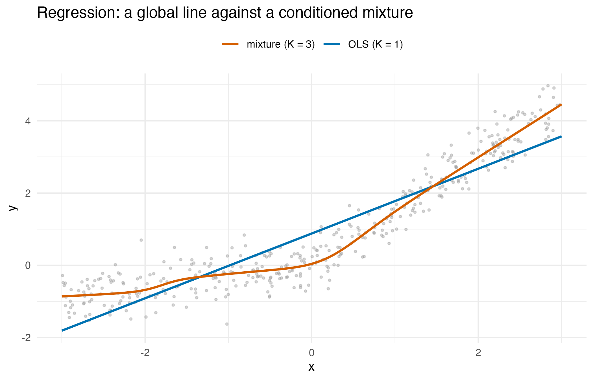
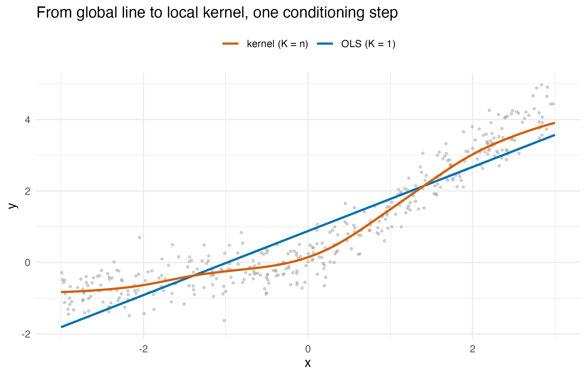
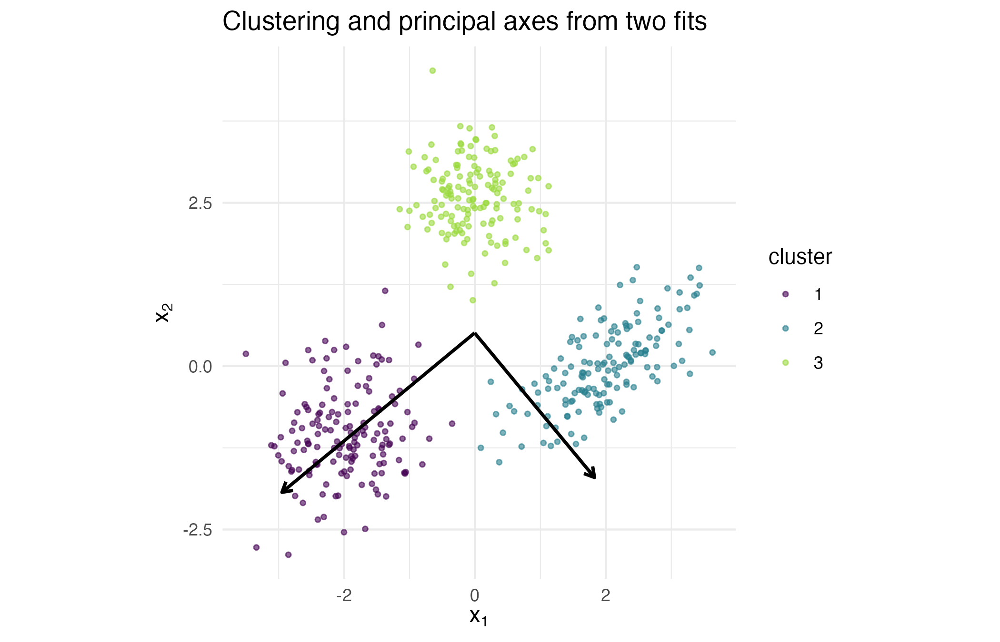
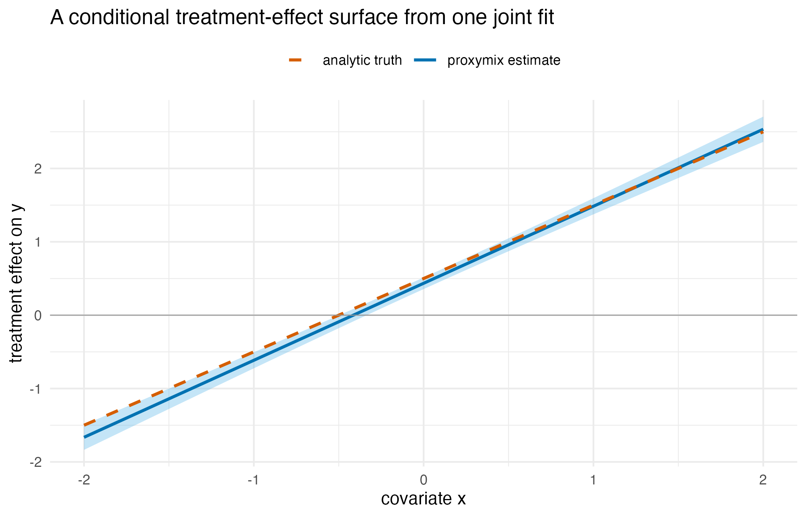

has_ggplot2 <- requireNamespace("ggplot2", quietly = TRUE)The problem
An analyst has fitted a Gaussian mixture over a table of data, and now has a week of ordinary work in front of her: a regression, a smoother, a clustering, a principal-components plot, a shrunk coefficient, and a treatment effect that she suspects varies from unit to unit. Each of those normally means reaching for a different package. Her question is: I already have one fitted mixture over these columns – which of the tools I would otherwise reach for does it actually replace, how do I know the answer is the same one, and what do I give up by using it instead?
The short answer is that conditioning, marginalisation and
eigendecomposition are all exact on a Gaussian mixture, so six familiar
analyses fall out of one family of fitted mixtures in closed form,
differing in the number and width of the components. Four of them
reproduce the classical answer to machine precision, the treatment
effect reproduces a two-model learner to the tolerance of the fit, and
the clustering is a model-based clustering rather than a copy of
kmeans(). The rest of this vignette shows each
substitution, checks it against the tool it stands in for, and states
the cost.
Package capabilities
A gmm is a finite Gaussian mixture: weights, means and
covariances. A data matrix becomes a target through
gmm_target_from_samples(), and fit_proxymix()
fits the mixture to it, in the closed-form "moment" regime
at one component or the classical expectation-maximisation
"sample" regime at more than one.
gmm_conditionalise() returns the conditional mixture
given values on some coordinates, in closed form by the Schur complement
(van der Hoek and Elliott, 2024). That single operator carries the
regression, the kernel smoother, the imputation and the ridge estimator
below: a conditional mean read off a joint fit is a prediction, and
which classical estimator it coincides with depends only on how many
components the mixture has and how wide they are.
bic_aic() scores a component count. The
ridge_eps argument of the fitting verbs adds a multiple of
the identity to each component covariance, which is where the
penalised-regression section comes from.
The decision family reads one joint fit as a causal object.
fit_uplift() assembles a mixture over outcome, treatment
and covariates and records the roles and the treatment arms it observed;
proxy_cate() reads the conditional average treatment effect
per unit, proxy_decide() turns it into an action under a
value and a cost, and proxy_identification_report() states
what the reading assumes and what it cannot deliver.
Addressing the problem
Each section below keeps the same shape: the problem, the usual tool, the proxymix route, the code, and the idea behind the substitution. The trade-offs are gathered in Interpretation.
## The conditional mean of the outcome coordinate, gated across components:
## sum_k pi_k(x) mu_k^{y|x}. This one helper serves the regression, the
## kernel-regression and the ridge sections.
cond_mean <- function(fit, xv) {
vapply(xv, function(xx) {
g <- gmm_conditionalise(fit, given = c(NA, xx))
sum(g@weights * vapply(g@means, function(m) m[1L], numeric(1L)))
}, numeric(1L))
}Regression: from lm() to a conditioned mixture
Problem. Predict an outcome
from a predictor
.
Usual tool. lm() or glm(),
one global line. proxymix route. Fit a mixture over the
joint
,
then read
by conditioning. At
this is least squares; at
the gate bends the line.
set.seed(20260617)
n <- 400L
x <- runif(n, -3, 3)
y <- 0.3 * x + 1.2 * pmax(x, 0) + rnorm(n, sd = 0.4) # a bent relationship
dat <- data.frame(y = y, x = x)
joint <- gmm_target_from_samples(cbind(y, x))
fit1 <- fit_proxymix(joint, N = 1L, regime = "moment", ridge_eps = 0)
fit3 <- fit_proxymix(joint, N = 3L, regime = "sample", max_iter = 150L)
## At K = 1 the conditional slope should equal the lm coefficient exactly.
slope_mix <- gmm_conditionalise(fit1, given = c(NA, 1))@means[[1L]] -
gmm_conditionalise(fit1, given = c(NA, 0))@means[[1L]]
slope_lm <- unname(coef(lm(y ~ x, dat))["x"])
diff_reg <- abs(slope_mix - slope_lm)
grid_reg <- data.frame(x = seq(-3, 3, length.out = 200L))
grid_reg$ols <- as.numeric(predict(lm(y ~ x, dat), newdata = grid_reg))
grid_reg$mix <- cond_mean(fit3, grid_reg$x)
ggplot2::ggplot() +
ggplot2::geom_point(data = dat, ggplot2::aes(x, y), colour = "grey60",
alpha = 0.4, size = 0.7) +
ggplot2::geom_line(data = grid_reg,
ggplot2::aes(x, ols, colour = "OLS (K = 1)"),
linewidth = 0.9) +
ggplot2::geom_line(data = grid_reg,
ggplot2::aes(x, mix, colour = "mixture (K = 3)"),
linewidth = 0.9) +
ggplot2::scale_colour_manual(
name = NULL,
values = c("OLS (K = 1)" = "#0072B2", "mixture (K = 3)" = "#D55E00")
) +
ggplot2::labs(
x = "x", y = "y",
title = "Regression: a global line against a conditioned mixture"
) +
ggplot2::theme_minimal(base_size = 11) +
ggplot2::theme(legend.position = "top")
One global line (K = 1, which is ordinary least squares) against a conditioned three-component mixture (K = 3) on data whose true relationship is bent at the origin. The mixture follows the bend; the single line cannot.
Idea. Each component supplies an affine conditional mean ; the responsibilities gate them, so the global mean is nonlinear. This is Gaussian-mixture regression. Unlike a mixture of linear regressions (de Veaux, 1989), whose component weights do not depend on , its gates do.
Kernel regression: from Nadaraya-Watson to a conditioned KDE
Problem. Predict
from
with no global functional form, a purely local smoother. Usual
tool. Nadaraya-Watson kernel regression (Nadaraya, 1964;
Watson, 1964; stats::ksmooth, or np, Hayfield and Racine,
2008): a kernel-weighted local average of the responses.
proxymix route. Place one Gaussian per data point over
the joint
– a kernel density estimate – and read
by conditioning. With a Gaussian kernel that conditional mean
is the Nadaraya-Watson estimator, exactly. Where
lm() sat at
,
one global line, Nadaraya-Watson sits at
,
one component per datum and fully local, and from_kde()
lands anywhere in between: a single axis with least squares at one end
and kernel smoothing at the other.
h <- 0.4 # kernel bandwidth
nw <- function(xq) {
vapply(xq, function(q) {
w <- dnorm(q, x, h) # Gaussian kernel weights
sum(w * y) / sum(w)
}, numeric(1L))
}
## One Gaussian per datum, a kernel density estimate of the joint (y, x);
## then condition on x and read the conditional mean.
kde <- gmm(weights = rep(1 / n, n),
means = lapply(seq_len(n), function(i) c(y[i], x[i])),
covariances = rep(list(diag(c(h^2, h^2))), n))
xq <- seq(-2.5, 2.5, length.out = 21L)
diff_nw <- max(abs(nw(xq) - cond_mean(kde, xq)))
grid_nw <- data.frame(x = seq(-3, 3, length.out = 200L))
grid_nw$ols <- as.numeric(predict(lm(y ~ x, dat), newdata = grid_nw))
grid_nw$nw <- nw(grid_nw$x)
ggplot2::ggplot() +
ggplot2::geom_point(data = dat, ggplot2::aes(x, y), colour = "grey60",
alpha = 0.4, size = 0.7) +
ggplot2::geom_line(data = grid_nw,
ggplot2::aes(x, ols, colour = "OLS (K = 1)"),
linewidth = 0.9) +
ggplot2::geom_line(data = grid_nw,
ggplot2::aes(x, nw, colour = "kernel (K = n)"),
linewidth = 0.9) +
ggplot2::scale_colour_manual(
name = NULL,
values = c("OLS (K = 1)" = "#0072B2", "kernel (K = n)" = "#D55E00")
) +
ggplot2::labs(
x = "x", y = "y",
title = "From global line to local kernel, one conditioning step"
) +
ggplot2::theme_minimal(base_size = 11) +
ggplot2::theme(legend.position = "top")
One axis, two endpoints: the global line at K = 1 (ordinary least squares) and the fully local kernel smoother at K = n (Nadaraya-Watson), both read off a mixture by the same conditioning operation.
Idea. Conditioning a per-point kernel density estimate gives responsibilities and per-component means , so , the Nadaraya-Watson ratio. Kernel regression is therefore Gaussian-mixture regression with one component per datum, a diagonal bandwidth, and only the conditional mean read off. The bandwidth plays the role of the component covariance.
Clustering: from kmeans() to the mixture
components
Problem. Group rows by similarity. Usual
tool. kmeans(), or mclust, which fits
exactly this model (Fraley and Raftery, 2002). proxymix
route. fit_proxymix(N = K, regime = "sample"): the
components are the clusters and the responsibilities are soft
assignments.
set.seed(20260617)
x_clust <- rbind(
mvnfast::rmvn(150L, c(-2, -1), 0.5 * diag(2)),
mvnfast::rmvn(150L, c(2, 0), matrix(c(0.6, 0.3, 0.3, 0.4), 2L)),
mvnfast::rmvn(150L, c(0, 2.5), 0.3 * diag(2))
)
colnames(x_clust) <- c("V1", "V2")
target_clust <- gmm_target_from_samples(x_clust)
fitc <- fit_proxymix(target_clust, N = 3L, regime = "sample",
max_iter = 150L)
## Soft assignment = posterior responsibility of each component.
responsibilities <- function(fit, xx) {
comp <- vapply(seq_len(gmm_n_components(fit)), function(k) {
fit@weights[k] *
mvnfast::dmvn(xx, mu = fit@means[[k]], sigma = fit@covariances[[k]])
}, numeric(nrow(xx)))
comp / rowSums(comp)
}
resp <- responsibilities(fitc, x_clust)
mean_confidence <- mean(apply(resp, 1L, max))| component 1 | component 2 | component 3 |
|---|---|---|
| 1.000 | 0.000 | 0.000 |
| 1.000 | 0.000 | 0.000 |
| 1.000 | 0.000 | 0.000 |
| 1.000 | 0.000 | 0.000 |
Idea. Soft, model-based clustering: a point’s assignment to cluster is its posterior responsibility .
Principal components: from prcomp() to the fitted
covariance
Problem. Find the directions of greatest variation.
Usual tool. prcomp(). proxymix
route. Fit a single Gaussian (N = 1,
regime = "moment") and eigendecompose its covariance.
fit_pca <- fit_proxymix(target_clust, N = 1L, regime = "moment",
ridge_eps = 0)
ev <- eigen(fit_pca@covariances[[1L]])$vectors
pr <- prcomp(x_clust)$rotation
## Identical to the prcomp rotation, up to the sign convention of each axis.
diff_pca <- max(abs(abs(ev) - abs(unname(pr))))
vals <- eigen(fit_pca@covariances[[1L]])$values
mu_pca <- unname(fit_pca@means[[1L]])
axes <- data.frame(
x = mu_pca[1L], y = mu_pca[2L],
xend = mu_pca[1L] + 2 * sqrt(vals) * ev[1L, ],
yend = mu_pca[2L] + 2 * sqrt(vals) * ev[2L, ]
)
pts <- data.frame(x_clust, cluster = factor(max.col(resp)))
ggplot2::ggplot() +
ggplot2::geom_point(data = pts,
ggplot2::aes(V1, V2, colour = cluster),
alpha = 0.6, size = 0.9) +
ggplot2::geom_segment(
data = axes, ggplot2::aes(x = x, y = y, xend = xend, yend = yend),
arrow = grid::arrow(length = grid::unit(0.2, "cm")), linewidth = 0.8
) +
ggplot2::scale_colour_viridis_d(name = "cluster", end = 0.85) +
ggplot2::coord_equal() +
ggplot2::labs(x = expression(x[1]), y = expression(x[2]),
title = "Clustering and principal axes from two fits") +
ggplot2::theme_minimal(base_size = 11)
Clustering (colour) and the principal axes (arrows) read off the same data by two different component counts: three components give the clusters, one component gives the covariance whose eigenvectors are the principal axes.
Idea. Principal-component analysis is the eigendecomposition of the covariance (Jolliffe, 2002). The moment-matched single Gaussian carries the sample covariance exactly, so its eigenvectors are the principal components, as in the maximum-likelihood solution of probabilistic principal component analysis (Tipping and Bishop, 1999); with the same read gives a local analysis inside each cluster.
Penalised regression: ridge as a covariance ridge
Problem. Stabilise a regression when predictors are
collinear. Usual tool. glmnet (ridge or
lasso), MASS::lm.ridge. proxymix route.
The ridge_eps argument adds
to the component covariance, which shrinks the conditional regression.
The result is exactly the ridge estimator of Hoerl and Kennard (1970),
an
penalty, with penalty
on the centred cross-products, because the covariance divides them by
.
lambda <- c(0, 0.5, 2, 8)
slope_pm <- vapply(lambda, function(lam) {
f <- fit_proxymix(joint, N = 1L, regime = "moment", ridge_eps = lam)
gmm_conditionalise(f, given = c(NA, 1))@means[[1L]] -
gmm_conditionalise(f, given = c(NA, 0))@means[[1L]]
}, numeric(1L))
slope_formula <- cov(x, y) / (var(x) + lambda)
diff_ridge <- max(abs(slope_pm - slope_formula))| Penalty | proxymix slope | Ridge closed form |
|---|---|---|
| 0.0 | 0.8968 | 0.8968 |
| 0.5 | 0.7680 | 0.7680 |
| 2.0 | 0.5367 | 0.5367 |
| 8.0 | 0.2434 | 0.2434 |
Idea. Conditioning gives . Ridging yields , the ridge estimator, so the slope shrinks toward zero as grows.
Treatment effects: from a two-model learner to one joint fit
Problem. Estimate a treatment effect that varies
from unit to unit, and then act on it. Usual tool. A
two-model T-learner (Künzel et al., 2019), fitting the treated and
control arms separately and subtracting, or a causal tree or forest
(Athey and Imbens, 2016; Athey et al., 2019; grf); for the
average effect alone, double machine learning (DoubleML; Bach et al.,
2024). proxymix route. fit_uplift() fits
one joint mixture over (outcome, treatment, covariates), and every
decision verb reads that single fit in closed form. Nothing re-fits per
query.
The design below is synthetic, chosen so that the truth is available as an oracle: the treatment effect is the known linear function , so the estimate can be scored against it.
set.seed(20260902)
n_up <- 600L
x_up <- rnorm(n_up)
t_up <- rbinom(n_up, 1L, 0.5)
tau_true <- function(v) 0.5 + v
y_up <- 1 + tau_true(x_up) * t_up + rnorm(n_up, sd = 0.5)
dat_up <- data.frame(y = y_up, t = t_up, x = x_up)
model <- fit_uplift(dat_up, "y", "t", "x", N = 2L, regime = "sample",
max_iter = 80L, seed = 1L)
model
#> <uplift_model>: K = 2 regimes, assume = "ignorability"
#> outcome : y (continuous)
#> treatment : t (arms 0 vs 1)
#> covariates: x
#> trained on: 600 unitsproxy_cate() reads the conditional average treatment
effect, with a standard error and an interval, at whatever units are
handed to it.
grid_up <- data.frame(x = seq(-2, 2, length.out = 41L))
cate <- proxy_cate(model, grid_up)
err_cate <- max(abs(cate$tau - tau_true(grid_up$x)))
## The two-model learner: one least-squares line per arm, as one
## interacted regression whose t and t:x terms are the per-arm differences.
fit_arms <- lm(y ~ t * x, data = dat_up)
b_arms <- coef(fit_arms)[c("t", "t:x")]
diff_arms <- max(abs(cate$tau - (b_arms[[1L]] + b_arms[[2L]] * grid_up$x)))
A_arms <- cbind(0, 1, 0, grid_up$x)
se_arms <- sqrt(rowSums((A_arms %*% vcov(fit_arms)) * A_arms))
se_ratio <- range(cate$se / se_arms)
## departure of intercept and slope from the truth, in standard errors
z_arms <- (b_arms - c(0.5, 1)) / sqrt(diag(vcov(fit_arms)))[c("t", "t:x")]
arm_of_component <- vapply(model@fit@means, function(m) {
m[model@roles$treatment]
}, numeric(1L))
cate_df <- as.data.frame(cate)
cate_df$x <- grid_up$x
cate_df$truth <- tau_true(grid_up$x)
ggplot2::ggplot(cate_df, ggplot2::aes(x)) +
ggplot2::geom_ribbon(ggplot2::aes(ymin = ci_lo, ymax = ci_hi),
fill = "#56B4E9", alpha = 0.35) +
ggplot2::geom_line(ggplot2::aes(y = tau, colour = "proxymix estimate"),
linewidth = 0.9) +
ggplot2::geom_line(ggplot2::aes(y = truth, colour = "analytic truth"),
linewidth = 0.9, linetype = "dashed") +
ggplot2::geom_hline(yintercept = 0, colour = "grey60",
linewidth = 0.3) +
ggplot2::scale_colour_manual(
name = NULL,
values = c("proxymix estimate" = "#0072B2",
"analytic truth" = "#D55E00")
) +
ggplot2::labs(
x = "covariate x", y = "treatment effect on y",
title = "A conditional treatment-effect surface from one joint fit"
) +
ggplot2::theme_minimal(base_size = 11) +
ggplot2::theme(legend.position = "top")
The conditional average treatment effect read off one joint mixture, with its delta-method interval, against the analytic truth that generated the data. The estimate is the straight line of intercept 0.435 and slope 1.050, the difference of the two per-arm least-squares lines; the truth has intercept 0.5 and slope 1.
Acting on the estimate is proxy_decide(), which turns an
effect into a recommended arm under a value per unit of outcome and a
cost of treating.
decision <- proxy_decide(model, grid_up, value = 1, cost = 0.5)
switch_x <- grid_up$x[min(which(decision$action == 1L))]| Covariate x | Estimated effect | True effect | Recommended arm | Net value |
|---|---|---|---|---|
| -2 | -1.665 | -1.5 | 0 | -2.165 |
| -1 | -0.615 | -0.5 | 0 | -1.115 |
| 0 | 0.435 | 0.5 | 0 | -0.065 |
| 1 | 1.485 | 1.5 | 1 | 0.985 |
| 2 | 2.534 | 2.5 | 1 | 2.034 |
A refusal rather than a wrong scale. The model recorded the treatment arms it actually saw. Asking for a contrast between arms the data never contained is refused, with a typed condition, instead of being answered on a silently rescaled axis.
refusal <- tryCatch(
proxy_cate(model, grid_up, t1 = 100, t0 = 0),
error = function(e) e
)
class(refusal)
#> [1] "proxymix_treatment_scale_error" "orchestra_refusal"
#> [3] "rlang_error" "error"
#> [5] "condition"
msg_lines <- strsplit(conditionMessage(refusal), "\n")[[1L]]
writeLines(strwrap(msg_lines, width = 70L, exdent = 2L))
#> `t1`/`t0` do not match the treatment levels observed at fit
#> time.
#> ℹ Observed treatment levels: 0 and 1.
#> ℹ Supplied: t1 = 100, t0 = 0.
#> ℹ Omit `t1`/`t0` to use the observed arms, or pass one of the
#> observed levels.The identification report is the artefact that travels with a decision: it names the estimand, the assumption it rests on, the overlap of the units supplied, the magnitude at risk if a latent regime confounds the effect, and what the model explicitly does not identify.
proxy_identification_report(model, grid_up)
#> Warning: The treatment is almost constant within every regime, so the within-regime
#> effect is zero and the gap equals the whole estimated effect.
#> ℹ The gap carries no information about confounding for this model.
#> == Identification report ==================================
#> Estimand : CATE / uplift: E[Y | do(T=t1), X] - E[Y | do(T=t0), X]
#> Assumption : ignorability
#> requires (Y(0), Y(1)) independent of T given X.
#> Regimes : K = 2 Outcome scale: continuous
#> Units : 41
#> Overlap : 100.0% of units adequately supported
#> Confounding gap (value at risk if a latent regime confounds):
#> mean |Delta| = 1.12, max |Delta| = 2.534
#> NOT identified : the individual counterfactual law
#> (its variance and tail probabilities).
#> ===========================================================On these data the confounding gap in the report equals the whole estimated effect and is not a separate check on it. Each of the two components holds one treatment arm, and the effect within a component is zero.
Idea. Under ignorability the conditional treatment effect is a contrast of two conditional means of the same joint mixture, minus , so the operator that produced the regression above produces the causal contrast as well. What changes is not the algebra but the assumption the reader is asked to accept, which is why the family ships a report that states it.
A few more, in one line each
Imputation is gmm_conditionalise() on the observed
coordinates, giving a conditional-mean or, through rgmm(),
a sampled fill-in. Density estimation is the native use, and
from_kde() compresses a kernel estimate into a closed-form
mixture. Kalman filtering is gmm_observe(), the mixture
form of the Kalman update.
Interpretation
Four of the six substitutions reproduce the classical answer to machine precision, and the treatment effect reproduces the two-model learner to the tolerance of the fit. That is the part worth checking rather than assuming.
| Claim | Maximum absolute difference |
|---|---|
| conditional slope equals the lm coefficient | 5.6e-16 |
| Per-point KDE conditional mean equals Nadaraya-Watson | 3.1e-15 |
| eigenvectors equal the prcomp rotation | 1.0e-15 |
| Ridged conditional slope equals the ridge closed form | 2.2e-16 |
| Two-component effect equals the per-arm least-squares contrast | 1.7e-06 |
Regression. At one component the conditional slope
and the lm coefficient differ by
,
which is the double-precision floor: the substitution is an identity,
not an approximation. At three components the same conditioning
operation follows the bend in the figure that the single line cannot.
What this buys is nonlinear, heteroscedastic, even multimodal
conditional densities rather than only a mean. What it costs is
classical inference: no standard errors or
-values
come back by default, and the components are Gaussian.
Kernel regression. The conditioned per-point kernel
density estimate and the Nadaraya-Watson smoother agree to
over the 21 query points. The same operation also returns the full
conditional density – predictive variance, quantiles, multimodality –
which the bare Nadaraya-Watson mean does not, and it works in the
evaluate-only regime where there are no points to average and so no
literal kernel estimator exists. The price is that the one-per-datum
estimate costs
per query, which from_kde() compresses to
,
and that the bandwidth must still be chosen.
Clustering. The three components recover the three
generated clouds, and the assignments are nearly hard: the mean largest
responsibility across the 450 rows is 0.999, so on well-separated data
the soft assignment is decisive. The gain over kmeans() is
ellipsoidal rather than spherical clusters, a soft assignment that
carries its own uncertainty, and a density estimate as a by-product. The
cost is that the component count is not chosen for you, which is what
bic_aic() is for, and that kmeans() is faster
at very large
.
Principal components. The eigenvectors of the
one-component covariance and the prcomp rotation differ by
once the sign convention of each axis is accounted for. At
the same read gives a local analysis inside each cluster, which
prcomp() does not offer. For a single linear projection
prcomp() remains more direct, since loadings, scree plots
and biplots come with it.
Ridge. The slope under a covariance ridge matches the closed-form ridge estimator to across all 4 penalties, and shrinks from 0.897 at no penalty to 0.243 at the largest. What is delivered is shrinkage and numerical stability from the object already in hand. What is not available is the lasso: shrinkage matches a Gaussian prior, sparsity a Laplace prior outside the Gaussian family, so this route does not perform variable selection.
Treatment effects. The two fitted components are the two treatment arms: their treatment coordinates are 0 and 1, and their weights 0.505 and 0.495 are the arm shares. Each component carries its own arm’s means and covariance of , so conditioning on an arm and on returns that arm’s least-squares line, and the estimated effect is the difference of the two lines: the two-model learner with a linear model in each arm. The estimate and the per-arm least-squares contrast differ by at most over the grid, the convergence tolerance of the expectation-maximisation fit, and the delta-method standard error is 0.99 to 1.00 times the regression’s own. The linear model in each arm is correctly specified for this design. The estimated line has intercept 0.435 and slope 1.050, against the true 0.5 and 1: the intercept is 1.6 standard errors from the truth and the slope 1.3, the sampling error of one dataset of 600 units. Across the covariate range the estimate departs from the truth by at most 0.165, on an effect that runs from -1.5 to 2.5. Turned into an action at a value of 1 and a cost of 0.5, the recommendation switches from control to treatment at 0.1, against the true break-even at 0. The share of grid points whose interval contains the truth is not a coverage rate: the 41 points share one dataset and one fitted line, so they miss or cover together. The simulation in the numerical illustration measures the coverage of the average effect over independent datasets.
The refusal is the other half of that section. Asking for a contrast
between treatment values of 100 and 0, on a model fitted to arms 0 and
1, returns a condition of class
proxymix_treatment_scale_error and
orchestra_refusal rather than a number: a decision verb
declines a question the fit cannot support instead of answering it on an
axis the data never contained.
| Analysis | Usual tool | proxymix route |
|---|---|---|
| Regression |
lm(), glm()
|
mixture over
,
then gmm_conditionalise()
|
| Kernel regression |
ksmooth(), np |
per-point kernel estimate, then
gmm_conditionalise()
|
| Clustering |
kmeans(), mclust |
fit_proxymix() in the sample regime |
| Principal components | prcomp() |
eigen() of the one-component
covariance |
| Ridge | glmnet, lm.ridge()
|
ridge_eps on the covariance |
| Treatment effects | T-learner, grf, DoubleML |
fit_uplift(), then
proxy_cate()
|
| Analysis | What you gain | What you give up |
|---|---|---|
| Regression | nonlinear, heteroscedastic, multimodal conditionals | built-in inference; Gaussian components |
| Kernel regression | full conditional density; the evaluate-only regime | per query unless compressed; bandwidth choice |
| Clustering | soft, ellipsoidal, density-aware clusters | automatic component count; speed at very large |
| Principal components | a local analysis per cluster | loadings, scree and biplot conveniences |
| Ridge | shrinkage from the same fit | sparsity and variable selection |
| Treatment effects | one fit, plus a stated identification contract | per-unit accuracy when an arm needs several components |
The answer to the opening question, then: one family of fitted
mixtures replaces the linear model, the kernel smoother, the
principal-components step and the ridge penalty exactly, reproduces the
two-model treatment-effect learner on this design, and gives a
model-based clustering in place of kmeans(). What is given
up is inference machinery for the regression reads and the freedom of a
non-Gaussian component shape.
Limitations
Five of the substitutions reproduce the tool they stand in for, so
they cannot be more accurate than it, only more convenient. The
clustering is a different method from kmeans(). The
treatment-effect reading reproduces the two-model learner on the design
above, where the component counts are supplied by hand. In the
simulation below, where BIC chooses them, its per-unit effect is less
accurate than the purpose-built learners’. Use the purpose-built tool
where its strengths are what is needed: high-dimensional sparse problems
suit glmnet, very
large-
clustering suits kmeans(), a single linear projection suits
prcomp(), and classical inferential guarantees suit
lm() or glm(). A single mixture is the simpler
choice when one fitted object should serve several of these at once, in
closed form, and when Gaussian components fit the data. The numerical
illustration that follows checks the four identities on real data and
places the treatment-effect reading beside four purpose-built
estimators, on a job-training study and in simulation.
Every fit on this page has samples to work from. The one-component
fits use the closed-form "moment" regime and the others the
"sample" regime. Before the numerical illustration the
component counts are supplied by hand; the job-training and simulation
fits choose theirs by BIC. Choosing
is a real decision that bic_aic() informs, and a count much
above the number of genuine structures will fit noise into the
conditional law.
The treatment-effect section carries two further limits. First, the
delta-method standard error holds the regime gate fixed and prices the
sampling variability of the components only. Here the gate is fixed by
the arm, and the standard error agrees with the regression’s; where an
arm needs several components, a resampling standard error that also
reflects the gate is available through se_method = "mc".
Second, with a binary treatment the fitted mixture separates on the
treatment arm itself, so within any one regime the treatment does not
vary and the within-regime treatment slope is zero. This means
proxy_regime_segments() returns an effect of zero in every
regime on data of this shape: the effect modification is carried
across regimes, by the gate, and is read correctly by
proxy_cate() but not by the segment table. A reader wanting
interpretable per-segment effects needs a design where the components
separate on the covariate rather than on the arm.
Everything causal here also rests on ignorability, which no goodness-of-fit statistic can certify, on data generated to satisfy it. The identification report states the assumption and the magnitude at risk if it fails, and declines the individual counterfactual law outright; it does not make the assumption true.
Numerical illustration
The classical substitutions on the Palmer penguins
The equalities above were checked on simulated data. Here they are
checked again on the Palmer penguins data (Gorman et al., 2014), shipped
with R as penguins since version 4.5.0 (Horst et al.,
2022), against the tool each substitution stands in for:
lm(), ksmooth(), kmeans() and
prcomp() from R itself, MASS::lm.ridge()
(Venables and Ripley, 2002) and glmnet (Friedman et al.,
2010). The score is the same for every row, the largest absolute
difference between the mixture read and the tool’s answer, so the table
reports agreement and not a ranking.
The two contributed packages install from CRAN once:
install.packages(c("MASS", "glmnet"))
cols <- c("bill_len", "bill_dep", "flipper_len", "body_mass")
peng <- na.omit(penguins[, c(cols, "species")])
X_peng <- as.matrix(peng[, cols])
n_peng <- nrow(X_peng)The four body measurements of the 342 birds measured in full are used, in their own units of millimetres and grams.
Body mass regressed on the three other measurements is the regression
and the ridge case, with the mixture’s slopes read as differences of the
conditional mean one unit apart. lm.ridge() and
glmnet both standardise the predictors before penalising
and scale the penalty differently, so the covariance ridge that
reproduces a penalty
is
for lm.ridge() and
for glmnet, where
is the standard deviation of body mass with divisor
.
cond_slopes <- function(fit, at) {
base <- cond_mean_p(fit, at)
vapply(seq_along(at), function(j) {
step <- at
step[j] <- step[j] + 1
cond_mean_p(fit, step) - base
}, numeric(1L))
}
## The conditional mean of the first coordinate given all the others.
cond_mean_p <- function(fit, xv) {
g <- gmm_conditionalise(fit, given = c(NA, xv))
sum(g@weights * vapply(g@means, function(m) m[1L], numeric(1L)))
}
y_peng <- X_peng[, "body_mass"]
X_pred <- X_peng[, c("bill_len", "bill_dep", "flipper_len")]
joint_peng <- gmm_target_from_samples(cbind(y_peng, X_pred))
fit_ols <- fit_proxymix(joint_peng, N = 1L, regime = "moment",
ridge_eps = 0)
slope_ols <- cond_slopes(fit_ols, colMeans(X_pred))
coef_lm <- coef(lm(body_mass ~ bill_len + bill_dep + flipper_len,
data = peng))[-1L]
diff_lm <- max(abs(slope_ols - coef_lm))
## Standardised predictors, so the two ridge penalties can be matched.
X_std <- scale(X_pred, center = TRUE, scale = FALSE)
scale_x <- sqrt(colSums(X_std^2) / n_peng)
X_std <- sweep(X_std, 2L, scale_x, "/")
s_y <- sqrt(mean((y_peng - mean(y_peng))^2))
joint_std <- gmm_target_from_samples(cbind(y_peng, X_std))
lambda_pen <- 5
ridge_slopes <- function(eps) {
f <- fit_proxymix(joint_std, N = 1L, regime = "moment", ridge_eps = eps)
cond_slopes(f, colMeans(X_std)) / scale_x
}
coef_massridge <- coef(MASS::lm.ridge(
body_mass ~ bill_len + bill_dep + flipper_len, data = peng,
lambda = lambda_pen))[-1L]
diff_massridge <- max(abs(ridge_slopes(lambda_pen / (n_peng - 1)) -
coef_massridge))
coef_glmnet <- as.numeric(coef(glmnet::glmnet(
X_pred, y_peng, alpha = 0, lambda = lambda_pen,
control = list(thresh = 1e-20))))[-1L]
diff_glmnet <- max(abs(
ridge_slopes(lambda_pen * n_peng / ((n_peng - 1) * s_y)) - coef_glmnet))Body mass smoothed on flipper length is the kernel case.
ksmooth() with its "normal" kernel and a
bandwidth of 10 mm is a Gaussian kernel with standard deviation
mm, cut off at four standard deviations from the query point, so the
untruncated Nadaraya-Watson estimator with the same kernel is also
compared.
x_fl <- X_peng[, "flipper_len"]
bw_fl <- 10
h_fl <- 0.25 * bw_fl / qnorm(0.75)
kde_peng <- gmm(
weights = rep(1 / n_peng, n_peng),
means = lapply(seq_len(n_peng), function(i) c(y_peng[i], x_fl[i])),
covariances = rep(list(diag(c(h_fl^2, h_fl^2))), n_peng)
)
xq_fl <- seq(180, 225, by = 5)
mix_fl <- vapply(xq_fl, function(q) cond_mean_p(kde_peng, q), numeric(1L))
ks_fl <- ksmooth(x_fl, y_peng, kernel = "normal", bandwidth = bw_fl,
x.points = xq_fl)$y
nw_fl <- vapply(xq_fl, function(q) {
w <- dnorm(q, x_fl, h_fl)
sum(w * y_peng) / sum(w)
}, numeric(1L))
diff_ksmooth <- max(abs(ks_fl - mix_fl))
diff_nw_peng <- max(abs(nw_fl - mix_fl))Three clusters and the principal axes come from the four measurements
together. kmeans() is run with 20 random starts, the
mixture with three components, and the cluster labels are matched by the
permutation that agrees on most birds before the centres are
compared.
set.seed(20260925)
km_peng <- kmeans(X_peng, centers = 3L, nstart = 20L)
target_peng <- gmm_target_from_samples(X_peng)
fit_peng3 <- fit_proxymix(target_peng, N = 3L, regime = "sample",
max_iter = 200L, seed = 1L)
resp_peng <- responsibilities(fit_peng3, X_peng)
lab_mix <- max.col(resp_peng)
perms <- list(c(1L, 2L, 3L), c(1L, 3L, 2L), c(2L, 1L, 3L),
c(2L, 3L, 1L), c(3L, 1L, 2L), c(3L, 2L, 1L))
agree_lab <- function(a, b) {
vapply(perms, function(p) mean(p[a] == b), numeric(1L))
}
agree_km <- agree_lab(km_peng$cluster, lab_mix)
best <- perms[[which.max(agree_km)]]
centres_km <- km_peng$centers[order(best), ]
centres_mix <- do.call(rbind, fit_peng3@means)
diff_kmeans <- max(abs(centres_km - centres_mix))
agree_species_mix <- max(agree_lab(as.integer(peng$species), lab_mix))
agree_species_km <- max(agree_lab(as.integer(peng$species),
km_peng$cluster))
fit_peng1 <- fit_proxymix(target_peng, N = 1L, regime = "moment",
ridge_eps = 0)
ev_peng <- eigen(fit_peng1@covariances[[1L]])$vectors
pr_peng <- unname(prcomp(X_peng)$rotation)
diff_prcomp <- max(abs(abs(ev_peng) - abs(pr_peng)))| Usual tool | What is compared | Maximum absolute difference |
|---|---|---|
| lm(), R 4.6.1 | three slopes, g per unit | 4.2e-13 |
| ksmooth(), R 4.6.1 | smoothed mass at 10 flipper lengths, g | 1.5e-01 |
| Nadaraya-Watson, untruncated kernel | smoothed mass at 10 flipper lengths, g | 1.5e-11 |
| kmeans(), R 4.6.1 | three cluster centres, mm and g | 7.3e+02 |
| prcomp(), R 4.6.1 | four by four rotation, unit free | 5.5e-14 |
| MASS::lm.ridge(), MASS 7.3-66 | three slopes at , g per unit | 2.8e-13 |
| glmnet ridge, glmnet 5.0 | three slopes at , g per unit | 1.5e-08 |
The regression, principal-component and lm.ridge() reads
agree with their tools to a difference, relative to the largest quantity
compared, of at most
,
about 13 significant digits; the glmnet read agrees to the
coordinate-descent tolerance, an absolute difference of
.
The kernel read differs from ksmooth() by 0.15 g on masses
between 3475 and 5438 g, all of it from the cut-off, and agrees with the
untruncated estimator to
.
Apart from the kernel cut-off, clustering is the one row that is not an
identity. kmeans() and the three-component mixture place
59.1 per cent of the birds in the same cluster and their matched centres
differ by up to 726 g in the body-mass coordinate, because
kmeans() minimises squared Euclidean distance on the raw
columns and body mass in grams dominates that distance. The mixture’s
clusters coincide with the three species for 98.5 per cent of the birds
and the kmeans() clusters for 58.2 per cent; neither method
was told the species.
The treatment effect on a job-training study
The treatment-effect section above used a synthetic design with the
truth known. Here proxymix and four treatment-effect tools estimate the
average effect of a job-training programme on the treated, on the
lalonde data shipped with MatchIt (Ho et al., 2011): the
185 programme participants and 429 comparison men of Dehejia and Wahba
(1999), with earnings in 1978 as the outcome and age, education, race,
marital status, degree status and earnings in 1974 and 1975 as
covariates. No true effect is known for these data, so the estimates and
their standard errors stand side by side, each with the standard error
its own method supplies.
The four competitors are a causal forest (grf; Athey et al., 2019),
targeted maximum likelihood estimation (tmle; Gruber and van der Laan,
2012), nearest-neighbour propensity-score matching followed by an
outcome regression (MatchIt, then lm() with a standard
error clustered on the matched pairs by sandwich; Zeileis et al., 2020),
and a T-learner of two generalised additive models (mgcv; Wood, 2011),
one per arm, with the effect read as the average difference of their
predictions over the treated men and a standard error from the two
fitted models. They install from CRAN once, with gam and dbarts for the
learners in tmle’s SuperLearner library:
install.packages(c("grf", "tmle", "gam", "dbarts", "MatchIt", "mgcv",
"sandwich"))Race is a three-level factor and enters the mixture as two indicators.
lal <- MatchIt::lalonde
lal$black <- as.integer(lal$race == "black")
lal$hispan <- as.integer(lal$race == "hispan")
covs <- c("age", "educ", "black", "hispan", "married", "nodegree",
"re74", "re75")
treated <- lal[lal$treat == 1L, ]proxymix fits one joint mixture with the component count chosen by
BIC, reads the effect for every treated man and averages. Its standard
error comes from gmm_fit_ensemble(), which refits the
mixture under bootstrap reweightings of the rows, and
proxy_functional_ci(), which turns the ensemble into a
percentile interval for the averaged effect.
model_lal <- fit_uplift(lal, "re78", "treat", covs, seed = 1L)
#> Warning: The EM log-likelihood decreased by 0.122 during fitting.
#> ℹ This usually signals ridge regularisation interacting with a
#> near-singular component.
#> Warning: The EM log-likelihood decreased by 0.193 during fitting.
#> ℹ This usually signals ridge regularisation interacting with a
#> near-singular component.
att_of <- function(g) {
m <- uplift_model(fit = g, roles = model_lal@roles,
assume = model_lal@assume,
outcome_type = model_lal@outcome_type,
data = model_lal@data, n_train = model_lal@n_train,
treatment_levels = model_lal@treatment_levels)
c(att = mean(proxy_cate(m, treated, se = FALSE)$tau))
}
ens_lal <- gmm_fit_ensemble(model_lal@fit, B = 200L, seed = 2L)
ci_lal <- proxy_functional_ci(ens_lal, att_of, level = 0.95)
se_lal <- sd(vapply(ens_lal$members, att_of, numeric(1L)))The ensemble holds 200 bootstrap refits. The sweep over one to four components warned twice that the expectation-maximisation objective decreased, in the three-component fit, where the 1974 and 1975 earnings are each zero for about 40 per cent of the men and a component can collapse onto them; the fit selected by BIC has 1 component, and the warnings do not concern it.
cf_lal <- causal_forest(lal[, covs], lal$re78, lal$treat,
num.threads = 1L, seed = 1L)
att_grf <- average_treatment_effect(cf_lal, target.sample = "treated")
#> Warning in average_treatment_effect(cf_lal, target.sample =
#> "treated"): Estimated treatment propensities take values between
#> 0.027 and 0.959 and in particular get very close to 0 and 1. In this
#> case, using `target.sample=overlap`, or filtering data as in Crump,
#> Hotz, Imbens, and Mitnik (Biometrika, 2009) may be helpful.
match_lal <- matchit(treat ~ age + educ + race + married + nodegree +
re74 + re75, data = lal, method = "nearest")
matched <- match.data(match_lal)
fit_matched <- lm(re78 ~ treat + age + educ + race + married + nodegree +
re74 + re75, data = matched, weights = weights)
v_matched <- sandwich::vcovCL(fit_matched, cluster = ~subclass)
att_match <- c(coef(fit_matched)[["treat"]],
sqrt(v_matched["treat", "treat"]))
f_gam <- re78 ~ s(age) + s(educ) + black + hispan + married + nodegree +
s(re74) + s(re75)
gam1 <- gam(f_gam, data = lal[lal$treat == 1L, ])
gam0 <- gam(f_gam, data = lal[lal$treat == 0L, ])
L1 <- predict(gam1, treated, type = "lpmatrix")
L0 <- predict(gam0, treated, type = "lpmatrix")
a1 <- colMeans(L1)
a0 <- colMeans(L0)
att_gam <- c(sum(a1 * coef(gam1)) - sum(a0 * coef(gam0)),
sqrt(drop(t(a1) %*% vcov(gam1) %*% a1 +
t(a0) %*% vcov(gam0) %*% a0)))The causal forest warns that its estimated propensities come close to
0 and 1, which the matching and the mixture also face on these data, and
suggests restricting the estimate to the units with overlap, after Crump
et al. (2009). The forest’s estimate is requested with
target.sample = "treated", the effect on the treated, the
same estimand as the other methods, and is not restricted. tmle runs
with its default SuperLearner (Polley et al., 2026) libraries, which
include a Bayesian additive regression tree learner. This chunk is
complete and runs as shown, but it took about 2.5 minutes on one core (R
4.6.1, Apple silicon); the results below are read from its stored
output. For a quick run, give tmle() the arguments
Q.SL.library = "SL.glm", g.SL.library = "SL.glm" on its
line, which fits the linear models alone.
library(tmle)
lal <- MatchIt::lalonde
lal$black <- as.integer(lal$race == "black")
lal$hispan <- as.integer(lal$race == "hispan")
covs <- c("age", "educ", "black", "hispan", "married", "nodegree",
"re74", "re75")
set.seed(20260925)
fit_tmle <- tmle(Y = lal$re78, A = lal$treat, W = lal[, covs])
att_tmle <- c(fit_tmle$estimates$ATT$psi,
sqrt(fit_tmle$estimates$ATT$var.psi))| Method | Effect on the treated, USD | SE | 95% lower | 95% upper |
|---|---|---|---|---|
| proxymix 0.16.0, one joint mixture | 1548 | 633 | 230 | 2593 |
| grf 2.6.1, causal forest | 681 | 977 | -1233 | 2595 |
| tmle 2.1.1, default libraries | 1149 | 932 | -677 | 2975 |
| MatchIt 4.7.2, matching then lm() | 1345 | 719 | -64 | 2754 |
| mgcv 1.9-4 T-learner | 1812 | 887 | 74 | 3550 |
The five point estimates run from 681 to 1812 USD, with standard errors from 633 to 977 USD; every interval overlaps every other, and 2 of the five exclude zero. With one component selected, the proxymix read is the linear regression adjustment: the treatment coefficient of a least-squares regression of 1978 earnings on the treatment and the covariates over all 614 men is 1548.24 USD, against 1548.23 for proxymix. The causal forest, which lets the effect vary with every covariate, is the lowest. One dataset without a known answer cannot say which is right, so the simulation below scores the same methods against a known effect.
A simulation benchmark
The simulation repeats the treatment-effect analysis on 200 datasets of 1000 units with a known heterogeneous effect. Two covariates and are standard normal. Treatment is assigned with probability , so about two units in five are treated, the arms differ in , and an unadjusted difference of means is confounded. The outcome is with standard normal and , so the effect rises with , the average effect over the population is 1, and the average effect on the treated is above 1 because treated units have larger .
Each method estimates the per-unit effect at every unit of its
dataset and one average effect with a 95 per cent interval. proxymix
chooses its component count by BIC and takes its interval from a
100-member bootstrap ensemble, against 200 on the job-training data. The
causal forest, tmle and the T-learner estimate the average effect, and
nearest-neighbour matching the effect on the treated. The matched
outcome regression carries treatment-by-covariate interactions so that
it also returns a per-unit effect. Each average is scored against its
value in that dataset: the mean of the known
over the dataset’s units, or over its treated units for matching. tmle
runs with a SuperLearner library of a linear model, a lasso-penalised
linear model (SL.glmnet at its default
alpha = 1, with a cross-validated penalty) and a
generalised additive model, in place of its default library, whose
regression-tree learner took about two minutes per dataset. This chunk
is complete and runs as shown, but it took about 23 minutes on one core
(R 4.6.1, Apple silicon); the results below are read from its stored
output. For a quick run, change the line n_rep <- 200L
to n_rep <- 20L.
library(proxymix)
library(grf)
library(tmle)
library(MatchIt)
library(mgcv)
n <- 1000L # units in each dataset
n_rep <- 200L
B <- 100L # bootstrap members behind the proxymix interval
# y = x1 + 0.5 x2^2 + tau(x) t + e, tau(x) = 1 + x1, P(t = 1) = logit^-1(-0.5 + 0.5 x1)
make_data <- function(n) {
x1 <- rnorm(n)
x2 <- rnorm(n)
t <- rbinom(n, 1L, plogis(-0.5 + 0.5 * x1))
tau <- 1 + x1
data.frame(y = x1 + 0.5 * x2^2 + tau * t + rnorm(n),
t = t, x1 = x1, x2 = x2, tau = tau)
}
sl_lib <- c("SL.glm", "SL.glmnet", "SL.gam")
rmse <- function(est, truth) sqrt(mean((est - truth)^2))
row_out <- function(method, estimand, cate, est, se, lower, upper, truth) {
data.frame(method = method, estimand = estimand, cate_rmse = cate,
estimate = est, lower = lower, upper = upper, truth = truth)
}
one_dataset <- function(r) {
set.seed(r)
d <- make_data(n)
X <- d[, c("x1", "x2")]
is_treated <- d$t == 1L
ate_true <- mean(d$tau)
att_true <- mean(d$tau[is_treated])
z <- qnorm(0.975)
# proxymix: one joint fit, effects by conditioning, percentile bootstrap
m <- fit_uplift(d, "y", "t", c("x1", "x2"), seed = r)
ate_of <- function(g) {
mg <- uplift_model(fit = g, roles = m@roles, assume = m@assume,
outcome_type = m@outcome_type, data = m@data,
n_train = m@n_train,
treatment_levels = m@treatment_levels)
c(ate = mean(proxy_cate(mg, X, se = FALSE)$tau))
}
ens <- gmm_fit_ensemble(m@fit, B = B, seed = r)
ci <- proxy_functional_ci(ens, ate_of, level = 0.95)
out_pm <- row_out("proxymix", "ATE",
rmse(proxy_cate(m, X, se = FALSE)$tau, d$tau),
ci$estimate, NA, ci$conf.low, ci$conf.high, ate_true)
# causal forest
cf <- causal_forest(X, d$y, d$t, num.threads = 1L, seed = r)
ate_cf <- average_treatment_effect(cf)
out_cf <- row_out("grf", "ATE", rmse(predict(cf)$predictions, d$tau),
ate_cf[["estimate"]], ate_cf[["std.err"]],
ate_cf[["estimate"]] - z * ate_cf[["std.err"]],
ate_cf[["estimate"]] + z * ate_cf[["std.err"]],
ate_true)
# tmle, no per-unit effect
fit_tmle <- tmle(Y = d$y, A = d$t, W = X, Q.SL.library = sl_lib,
g.SL.library = sl_lib)
est_tmle <- fit_tmle$estimates$ATE
out_tmle <- row_out("tmle", "ATE", NA, est_tmle$psi, sqrt(est_tmle$var.psi),
est_tmle$CI[1L], est_tmle$CI[2L], ate_true)
# nearest-neighbour matching, then an interacted outcome regression
mm <- matchit(t ~ x1 + x2, data = d, method = "nearest")
md <- match.data(mm)
fit_lm <- lm(y ~ t * (x1 + x2), data = md, weights = weights)
V <- sandwich::vcovCL(fit_lm, cluster = ~subclass)
d1 <- d
d1$t <- 1L
d0 <- d
d0$t <- 0L
M1 <- model.matrix(formula(fit_lm)[-2L], d1)
M0 <- model.matrix(formula(fit_lm)[-2L], d0)
cate_lm <- drop((M1 - M0) %*% coef(fit_lm))
a <- colMeans((M1 - M0)[is_treated, ])
se_lm <- sqrt(drop(t(a) %*% V %*% a))
att_lm <- sum(a * coef(fit_lm))
out_lm <- row_out("MatchIt + lm", "ATT", rmse(cate_lm, d$tau), att_lm,
se_lm, att_lm - z * se_lm, att_lm + z * se_lm, att_true)
# T-learner of two generalised additive models
g1 <- gam(y ~ s(x1) + s(x2), data = d[is_treated, ])
g0 <- gam(y ~ s(x1) + s(x2), data = d[!is_treated, ])
L1 <- predict(g1, X, type = "lpmatrix")
L0 <- predict(g0, X, type = "lpmatrix")
cate_gam <- drop(L1 %*% coef(g1) - L0 %*% coef(g0))
a1 <- colMeans(L1)
a0 <- colMeans(L0)
se_gam <- sqrt(drop(t(a1) %*% vcov(g1) %*% a1 + t(a0) %*% vcov(g0) %*% a0))
ate_gam <- mean(cate_gam)
out_gam <- row_out("mgcv T-learner", "ATE", rmse(cate_gam, d$tau), ate_gam,
se_gam, ate_gam - z * se_gam, ate_gam + z * se_gam,
ate_true)
rbind(out_pm, out_cf, out_tmle, out_lm, out_gam)
}
res <- do.call(rbind, lapply(seq_len(n_rep), one_dataset))
sim_tab <- aggregate(
cbind(bias = estimate - truth, rmse = (estimate - truth)^2,
coverage = lower <= truth & truth <= upper,
width = upper - lower) ~ method + estimand,
data = res, FUN = mean
)
sim_tab$rmse <- sqrt(sim_tab$rmse)
cate_tab <- aggregate(cate_rmse ~ method, data = res, FUN = mean,
na.action = na.pass)
sim_tab$cate_rmse <- cate_tab$cate_rmse[match(sim_tab$method,
cate_tab$method)]
sim_tab| Method | Estimand | Per-unit RMSE | Bias | RMSE | Coverage | Width |
|---|---|---|---|---|---|---|
| proxymix | ATE | 0.496 | 0.005 | 0.076 | 0.945 | 0.282 |
| grf | ATE | 0.312 | 0.013 | 0.080 | 0.965 | 0.321 |
| tmle | ATE | – | 0.004 | 0.074 | 0.965 | 0.317 |
| MatchIt + lm | ATT | 0.167 | 0.002 | 0.091 | 0.960 | 0.346 |
| mgcv T-learner | ATE | 0.186 | -0.001 | 0.072 | 0.920 | 0.264 |
On the average effect the five methods are close. Four intervals cover their target within 1.0 Monte Carlo standard errors of the nominal rate: proxymix in 0.945 of datasets, the causal forest and tmle in 0.965 and 0.965, and the matched regression in 0.960. That standard error is about 0.015 at a true rate of 0.95. The T-learner’s interval covers in 0.920 of datasets, 1.9 of those standard errors below 0.95, or 1.6 of its own standard error of 0.019. The largest absolute bias is 0.013, for the causal forest, and the root mean squared errors run from 0.072 for the T-learner to 0.091 for the matched regression, whose estimand is the effect on the treated. The proxymix interval is the second narrowest, at 0.282 against 0.264 for the T-learner, whose model-based standard error leaves its coverage the lowest of the five.
The per-unit effect separates the methods. The T-learner and the interacted matched regression, whose effect models are both correctly specified for , have root mean squared errors of 0.186 and 0.167; the causal forest has 0.312; proxymix has 0.496, the largest, on an effect whose standard deviation across units is 1. On the first dataset, regenerated from the stored code, BIC chose 3 components: 1 in the treated arm and 2 in the control arm. Within an arm with several components the gate bends that arm’s regression towards the quadratic baseline in , so the per-unit effect, a difference between the two arms’ regressions, carries curvature from one arm only; its root mean squared error on that dataset is 0.706. Averaged over the units, much of that error cancels, and the average-effect error of proxymix sits among the other methods’.
In this run the average-effect intervals ranked by width as the T-learner (0.264), proxymix (0.282), tmle (0.317), the causal forest (0.321) and the matched regression (0.346); each paired difference in width between proxymix and another method is at least 8 standard errors, so the ranking is resolved, although the matched regression targets the effect on the treated. On the squared error of the average effect, the paired differences between proxymix and the causal forest, tmle and the T-learner are at most 2.1 standard errors, so this run does not clearly separate the four. The T-learner and the matched regression came out ahead of every other method on the per-unit effect, and proxymix had the largest per-unit error. The comparison covers one design, one sample size, two covariates, a linear effect and a quadratic baseline; it does not cover effects with more structure than a few Gaussian regimes can carry, many covariates, or the case where the Gaussian components fit the outcome badly, and it uses a lighter learner library for tmle than its default.
Further reading
Choosing between the three fitting regimes explains what the
"moment" and "sample" arguments used
throughout this page actually do, when each applies, and the
"kld" regime for a density that can only be evaluated.
Compressing a kernel density estimate into a mixture is the compression step that turns the kernel smoother above into an one.
The closed-form operator calculus on a mixture covers the pushforward and Kalman-update operators that the one-line extras above only name.
Imputing missing data with a mixture takes the conditioning operator used throughout this page and applies it to holes in the data.
References
- Athey, S. and Imbens, G. (2016). Recursive partitioning for heterogeneous causal effects. Proceedings of the National Academy of Sciences 113(27), 7353–7360. https://doi.org/10.1073/pnas.1510489113.
- Athey, S., Tibshirani, J. and Wager, S. (2019). Generalized random forests. The Annals of Statistics 47(2), 1148–1178. https://doi.org/10.1214/18-AOS1709.
- Bach, P., Kurz, M. S., Chernozhukov, V., Spindler, M. and Klaassen, S. (2024). DoubleML: An object-oriented implementation of double machine learning in R. Journal of Statistical Software 108(3), 1–56. https://doi.org/10.18637/jss.v108.i03.
- Crump, R. K., Hotz, V. J., Imbens, G. W. and Mitnik, O. A. (2009). Dealing with limited overlap in estimation of average treatment effects. Biometrika 96(1), 187–199. https://doi.org/10.1093/biomet/asn055.
- Dehejia, R. H. and Wahba, S. (1999). Causal effects in nonexperimental studies: reevaluating the evaluation of training programs. Journal of the American Statistical Association 94(448), 1053–1062. https://doi.org/10.1080/01621459.1999.10473858.
- de Veaux, R. D. (1989). Mixtures of linear regressions. Computational Statistics & Data Analysis 8(3), 227–245. https://doi.org/10.1016/0167-9473(89)90043-1.
- Fraley, C. and Raftery, A. E. (2002). Model-based clustering, discriminant analysis, and density estimation. Journal of the American Statistical Association 97(458), 611–631. https://doi.org/10.1198/016214502760047131.
- Friedman, J., Hastie, T. and Tibshirani, R. (2010). Regularization paths for generalized linear models via coordinate descent. Journal of Statistical Software 33(1), 1–22. https://doi.org/10.18637/jss.v033.i01.
- Gorman, K. B., Williams, T. D. and Fraser, W. R. (2014). Ecological sexual dimorphism and environmental variability within a community of Antarctic penguins (genus Pygoscelis). PLoS ONE 9(3), e90081. https://doi.org/10.1371/journal.pone.0090081.
- Gruber, S. and van der Laan, M. J. (2012). tmle: An R package for targeted maximum likelihood estimation. Journal of Statistical Software 51(13), 1–35. https://doi.org/10.18637/jss.v051.i13.
- Hayfield, T. and Racine, J. S. (2008). Nonparametric econometrics: The np package. Journal of Statistical Software 27(5), 1–32. https://doi.org/10.18637/jss.v027.i05.
- Ho, D. E., Imai, K., King, G. and Stuart, E. A. (2011). MatchIt: Nonparametric preprocessing for parametric causal inference. Journal of Statistical Software 42(8), 1–28. https://doi.org/10.18637/jss.v042.i08.
- Hoerl, A. E. and Kennard, R. W. (1970). Ridge regression: biased estimation for nonorthogonal problems. Technometrics 12(1), 55–67. https://doi.org/10.1080/00401706.1970.10488634.
- Horst, A. M., Presmanes Hill, A. and Gorman, K. B. (2022). Palmer Archipelago penguins data in the palmerpenguins R package – an alternative to Anderson’s irises. The R Journal 14(1), 244–254. https://doi.org/10.32614/RJ-2022-020.
- Jolliffe, I. T. (2002). Principal Component Analysis, 2nd ed. Springer. https://doi.org/10.1007/b98835.
- Künzel, S. R., Sekhon, J. S., Bickel, P. J. and Yu, B. (2019). Metalearners for estimating heterogeneous treatment effects using machine learning. Proceedings of the National Academy of Sciences 116(10), 4156–4165. https://doi.org/10.1073/pnas.1804597116.
- Nadaraya, E. A. (1964). On estimating regression. Theory of Probability and Its Applications 9(1), 141–142. https://doi.org/10.1137/1109020.
- Polley, E., LeDell, E., Kennedy, C. and van der Laan, M. (2026). SuperLearner: Super Learner Prediction. R package version 2.0-41. https://doi.org/10.32614/CRAN.package.SuperLearner.
- Tipping, M. E. and Bishop, C. M. (1999). Probabilistic principal component analysis. Journal of the Royal Statistical Society B 61(3), 611–622. https://doi.org/10.1111/1467-9868.00196.
- van der Hoek, J. and Elliott, R. J. (2024). Mixtures of multivariate Gaussians. Stochastic Analysis and Applications. https://doi.org/10.1080/07362994.2024.2372605.
- Venables, W. N. and Ripley, B. D. (2002). Modern Applied Statistics with S, 4th ed. Springer.
- Watson, G. S. (1964). Smooth regression analysis. Sankhyā A 26(4), 359–372.
- Wood, S. N. (2011). Fast stable restricted maximum likelihood and marginal likelihood estimation of semiparametric generalized linear models. Journal of the Royal Statistical Society B 73(1), 3–36. https://doi.org/10.1111/j.1467-9868.2010.00749.x.
- Zeileis, A., Köll, S. and Graham, N. (2020). Various versatile variances: An object-oriented implementation of clustered covariances in R. Journal of Statistical Software 95(1), 1–36. https://doi.org/10.18637/jss.v095.i01.
Reproduce
Two seeds are used in the first part: 20260617 for the
regression, clustering and principal-components data, set in the chunk
that builds each, and 20260902 for the treatment-effect
design. fit_uplift() is additionally given
seed = 1L so its expectation-maximisation start is
reproducible without disturbing the ambient random-number state.
In the numerical illustration, kmeans() runs after
set.seed(20260925), the three-component penguin fit and the
job-training fit are given seed = 1L, the bootstrap
ensemble seed = 2L, and the causal forest
seed = 1L. The stored tmle estimate comes from the code
shown, run after set.seed(20260925) on 25 September 2026
with R 4.6.1, tmle 2.1.1 and SuperLearner 2.0-41, in about 2.5 minutes,
and the run raised 0 warnings. In the simulation each dataset is
generated after set.seed() with its own index, which also
seeds the mixture fit, its ensemble and the forest. The stored
simulation results come from the code shown, run on 26 September 2026
with R 4.6.1, proxymix 0.16.0, grf 2.6.1, tmle 2.1.1, SuperLearner
2.0-41, MatchIt 4.7.2, mgcv 1.9-4 and sandwich 3.1-3, and the run raised
0 warnings.
old_opt <- options(width = 72L)
si_vec <- trimws(capture.output(sessionInfo()), "right")
options(old_opt)
# library paths are single long words, so a long line breaks after a slash
long_vec <- nchar(si_vec) > 72L
si_vec[long_vec] <- gsub("(.{1,68}/)(?=.{8,})", "\\1\n ",
si_vec[long_vec], perl = TRUE)
writeLines(si_vec)
#> R version 4.6.1 (2026-06-24)
#> Platform: aarch64-apple-darwin23
#> Running under: macOS Tahoe 26.6.2
#>
#> Matrix products: default
#> BLAS: /Library/Frameworks/R.framework/Versions/4.6/Resources/lib/
#> libRblas.0.dylib
#> LAPACK: /Library/Frameworks/R.framework/Versions/4.6/Resources/lib/
#> libRlapack.dylib; LAPACK version 3.12.1
#>
#> locale:
#> [1] en_AU.UTF-8/en_AU.UTF-8/en_AU.UTF-8/C/en_AU.UTF-8/en_AU.UTF-8
#>
#> time zone: Australia/Adelaide
#> tzcode source: internal
#>
#> attached base packages:
#> [1] splines stats graphics grDevices utils datasets
#> [7] methods base
#>
#> other attached packages:
#> [1] mgcv_1.9-4 nlme_3.1-171 MatchIt_4.7.2
#> [4] tmle_2.1.1 SuperLearner_2.0-41 gam_1.22-7
#> [7] foreach_1.5.2 nnls_1.6 glmnet_5.0
#> [10] Matrix_1.7-6 grf_2.6.1 proxymix_0.16.0
#>
#> loaded via a namespace (and not attached):
#> [1] sandwich_3.1-3 sass_0.4.10 generics_0.1.4
#> [4] shape_1.4.6.1 lattice_0.23-1 digest_0.6.39
#> [7] magrittr_2.0.5 evaluate_1.0.5 grid_4.6.1
#> [10] RColorBrewer_1.1-3 iterators_1.0.14 fastmap_1.2.0
#> [13] jsonlite_2.0.0 backports_1.5.1 survival_3.8-11
#> [16] viridisLite_0.4.3 scales_1.4.0 codetools_0.2-20
#> [19] textshaping_1.0.5 jquerylib_0.1.4 cli_3.6.6
#> [22] chk_0.10.0 rlang_1.3.0 withr_3.0.3
#> [25] cachem_1.1.0 yaml_2.3.12 otel_0.2.0
#> [28] tools_4.6.1 dplyr_1.2.1 ggplot2_4.0.3
#> [31] vctrs_0.7.3 R6_2.6.1 zoo_1.9-0
#> [34] lifecycle_1.0.5 fs_2.1.0 htmlwidgets_1.6.4
#> [37] MASS_7.3-66 ragg_1.5.2 pkgconfig_2.0.3
#> [40] desc_1.4.3 pkgdown_2.2.1 pillar_1.11.1
#> [43] bslib_0.12.0 gtable_0.3.6 glue_1.8.1
#> [46] data.table_1.18.6.1 Rcpp_1.1.2 systemfonts_1.3.2
#> [49] xfun_0.60 tibble_3.3.1 tidyselect_1.2.1
#> [52] knitr_1.51 dichromat_2.0-1 farver_2.1.2
#> [55] htmltools_0.5.9 rmarkdown_2.32 labeling_0.4.3
#> [58] compiler_4.6.1 S7_0.2.2 mvnfast_0.2.8